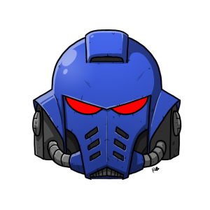
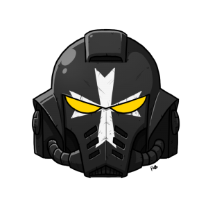
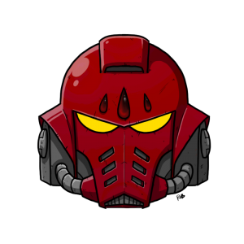
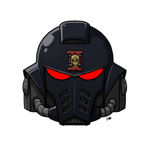
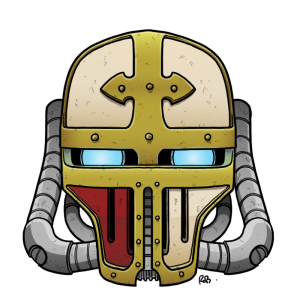

Wargaming
Tabletop Battles Autopsy: The Big 10th Edition Retrospective – Imperium
Today we're back for part two of our big retrospective of the 10th Edition Codex releases, this time covering the Imperium factions. Our team from part 1 returns, this time joined by Sisters faction expert TwoHorse to help out with the Sororitas, and today's going to be a pretty wild ride, because the Imperium had books at both ends of the spectrum on several metrics.
If you want to remind yourself of how we've put this together, or see the scores for Space Marines, check out part 1 below: The most important thing to remember from the methodology - the numerical scores consider each Codex as it released, while the best/worst Detachment votes consider Detachments at their peak power level and cover digital releases as well.
The Sisters of Battle were up and down all edition, as you might expect for an army with a mechanic as powerful as “fixing your dice rolls.” The faction’s strong army rule and multiple well-written Detachments meant faction power oscillated between “playable but not competitive” and “S/A-tier,” largely depending on whether they could take enough units to make up for their inherent fragility. As with other niche factions with heavy hobby lifts, like Admech or Genestealer Cults, improvements in Sisters power level were made quickly apparent by a small, dedicated playerbase without the performance-dilution enjoyed by more popular factions, as jumping on the bandwagon simply took too long to get hobbied before the inevitable correction.
Once the initial Eldar/GSC apocalypse of 10e launch was toned down, Sisters enjoyed a wide degree of build diversity in the index days. Popular builds coalesced around arco-flagellants or Exorcists, but a few skilled players managed to take down supermajors with balanced lists as well, highlighting that the faction’s power was in their army and Detachment rules rather than datasheets. That trend continued at Codex launch, which debuted with tremendous power and was nerfed repeatedly before finally having the army rule effectively suspended, which removed the faction from competitive play for a few months until the current, more reasonable balance was found.
Worst Detachment: Penitent Host
Although Sisters ended the edition tied with Imperial Agents for the fewest Detachments of any faction at five, Sisters were fortunate that four of those saw competitive success, and at least two were competitively viable at any given time. Additionally Sisters received two new Kill Team units in Sanctifiers and Celestian Insidiants after the Codex released, both of which increased competitive options without being spammed, adding new spice to the faction.
Post-Grotmas was a dark time for Sisters players, as the army rule change severely limited their dice generation capability, and the resulting abysmal faction performance demonstrated that miracle dice are necessary for the datasheets to function without simply pricing the army like a horde - the concept was well designed, but hard to balance.
After most of the army rule nerfs were reverted, settling on reducing automatic dice generation to one per battle round rather than one per turn, Sisters landed where they are now: consistently competitive but seldom dominant.
Additionally, while four of the five Sisters Detachments notched at least one GT win, Penitent Host never had a moment in the sun. The memory of 9th edition Bloody Rose lists evidently haunted the design team, and so access to advance and charge was gated behind one of the game’s most awkwardly designed Detachments - this was a reasonable concern, as miracle dice extend the value beyond what it would be in other armies. The net result was the longest melee threat ranges available anywhere, bolted onto units with specialized target selection, and in a Detachment that offered nothing to the rest of the faction. It’s not that the Detachment was unplayable, but that it was guaranteed to utterly dominate or lose horribly depending on your opponent, and there was very little either of you could do about it.
Whether it was spamming Arco-Flagellants with a 4+ feel no pain in the index days, Bringers of Flame with cheap T10 tank hulls delivered at incredible speed, or more recently Champions of Faith with resurrecting Celestian Sacresants played in triplicate, the common thread in high-performing Sisters metas was when their faction identity as glass cannons that survive through miraculous divine intervention becomes substituted for Necron-like resilience or an overabundance of units.
Wings: Yeah although it’s easy to forget as Sisters were later brought back up a notch, the first round of nerfs they got was a really classic double whammy of points and rules changes at the same time, where really they only needed one. We had quite a few instances of this in 10th, and it’s something that would be nice to see done more cautiously, or perhaps by other levers, in 11th.
Specifically, the new Detachment system opens up the possibility that Penitent Host could be taken alongside an actual Detachment, which would help Repentia and the Penitent walkers see the table again without trying to build a ruleset which offers even more benefit to other datasheets.
Additionally, as much as we love Morvenn Vahl and her Paragon Warsuits, it would be nice to have something else to compete with them in list design. The dichotomy between her ludicrous output and relative fragility has been a central feature of the faction for a long time, and it would be interesting to reasonably contemplate a list without her - not because she’s been nerfed, but because something else offers a meaningful alternative to what she brings to the table.
The kindest way to describe the Adeptus Custodes experience in 10th is “peaks and troughs.” Specifically, one trough, which was the Codex being released.
Worst Detachment: Null Maiden Vigil
The book wasn’t helped by unfortunate timing (when it went to print, it probably didn’t matter that none of the Auric Champions Stratagems were Battle Tactics, and the Feel No Pain from Talons of the Emperor would have worked as expected against Devastating Wounds), but even outside of that context it was a complete dog.
All wasn’t lost for the Adeptus Custodes, with substantial rewrites, new Detachments, and an apparent compulsion to keep dropping the costs of Custodian Guard (and, later, Venerable Land Raiders) opened up their options for list-building and restored some of their lost power. As released, however, they’re in the conversation for worst book of the edition along with Adeptus Mechanicus and Imperial Agents, and one of those is barely a Codex at all.
The Adeptus Mechanicus hit the ground as the consensus worst army in 40k and their early Codex didn’t do anything to help that. They spent the next two years more or less wallowing in obscurity before the Haloscreed Battle Clade helped things in Grotmas and the slow, growing number of tweaks and buffs to the army (culminating in a massive buff to Cawl) finally led to them bursting through the dam as flat overpowered by the 2025 World Championships.
Worst Detachment: Data-psalm Conclave
The Haloscreed Battle Clade did, eventually, open up broader options, and although eclipsed in raw power by Hunter Cohort, it probably achieved the best AdMech "feel" of any released, and unpicking why that was would be a good path forward.
After being one of the last Codexes of 9th edition - which included a big release with the Rogal Dorn - The Astra Militarum started the edition strong with the Combined Arms Detachment, which gave them a balanced, powerful set of effects against a variety of targets. They more or less kept that intact when the Codex released, adding new Detachments with a varied set of play styles and varying levels of actual combat effectiveness.
Worst Detachment: Siege Regiment
Rob: CSM has it beat in my estimation, but the Guard book is pretty close. The army has a ton of unit variety and the Codex really helps a large number of units shine in different contexts. Even the bad Detachments are interesting. Combined Arms is just such a good concept as an all-rounder that it almost risks being Gladius levels of too good, but manages to not overdo it. It’s close to a perfect “default” Detachment.
Rob: Recon Element. It technically “works” in that it’s an incredibly strong way to play guard, but very difficult and very taxing, to the point that no one actually wants to play with it or against it. Creating benefits for infantry-heavy guard is a good idea, but giving them all 3+ saves in cover is not. Bridgehead Strike was also pretty crazy, but was much less of a problem after we stopped playing with Secret Missions.
Wings: On the win rate, I think part of the issue here is that the Guard book is relatively unique for a 10th Codex in still having a laundry list of suboptimal units you could take if you want your win rate to go down. There are clear “best” Russ and super-heavy chassis, but the other ones are all still here, and in many cases kind of terrible with it. Guard also have a pretty high skill ceiling with how you use Orders, plus the reach you could pull off with Kasrkin early on. I distinctly remember playing a game against a really good Guard player after a few games against more middle of the road ones and it being a completely different experience, to a much greater extent than most armies.
Wings: Also, to keep a careful eye on digital releases - the Guard had a particularly brutal run of overpowered ones between Bridgehead, Aquilons and Grizzled.
Grey Knights were pretty mediocre in early 10th, but got a shot in the army from some Datasheet buffs and the powerful Warpbane Task Force Detachment. Then the Codex arrived…and at least they still had those things.
Scores
Worst Detachment: Hallowed Conclave
Wings: Definitely agree on this - of all the books in 10th, this is the one where the designers were most clearly terrified of making something busted, and the book is dire as a result.
Really this entire faction needs a range refresh but at a minimum Grey Knights need a faction leader. Sending Drago off to the farm was eventually going to happen but really should have waited till he got a new miniature. Adding a new Drago and hopefully a few new miniature to the line in 11th in on my wishlist for sure as the Grey Knights become one of the most under support factions in the game model wise.
One of two “new” factions in tenth edition, Imperial Agents was primarily a clearing house for Inquisitors, Assassins, and their hangers-on but also gave us rules for a variety of Kill Team weirdoes which had seen release over the prior two years, adding in rules for Imperial Navy and Adeptus Arbites units. The book also created allies rules for Deathwatch and Adepta Sororitas units.
Worst Detachment: Veiled Blade Elimination Force
Additionally, the allies rules for Imperial Agents are just crazy soft and allow too many armies to shore up weaknesses at no cost - Custodes were by far the biggest winners from this book, as they immediately gained a ton of value adding Inquisitor Draxus and potentially a second add-on to units of Custodian Guard with the ability to shoot twice. The Callidus Assassin staying at 100pts as an ally after the introduction of separate costs for allies was also an inexplicable and persistent travesty.
Wings: I’d argue that if they want to take a crack at making this work in 11th (and the patch fix they should have applied in 10th), the solution is to let you bring Militarum Tempestus stuff. Inquisitorial Storm Troopers used to be a thing way back when, and access to the extra punch of these units would give you a way to make a more broadly viable set of lists, rather than just the one Fleet Horde setup.
One can certainly see ways of attacking this with modular Detachments too - if you could just pay 1DP for “you can take up to 1000pts of Militarum Tempestus stuff, and they keep Voice of Command” you probably would. I’d guess they’re going heavily back to the drawing board on this one, given that the book largely sat abandoned balance-wise, but it wouldn’t shock me if we got a really out there new version of this deep into 11th.
After a summer dominated by Chaos Knights, Imperial Knights landed nearly six months later, sporting a new knight chassis with the Defender and updated Detachments and datasheets which were a decided downgrade from the raw power of their Index. Imperial Knights had seen plenty of play after the changes to their datasheets earlier in the year and were one of the game’s more powerful armies through the summer thanks to an index Detachment boasting a busted set of abilities.
Worst Detachment: Questor Forgepact
*note that in this case we excluded the full power version of Valourstrike Lance because it was never tournament legal.
Afterward the faction really hasn’t held up well in any meta that’s geared toward taking down big threats and subsequent go arounds in the C’tan and Defiler metas weren’t kind. The army also suffered from a lack of unit diversity that Chaos Knights didn’t quite have, though that improved substantially with the addition of the knight defender and the Knight Destrier in early 2026.
Wings: The book also had to be pre-nerfed to avoid the high mobility of Valourstrike Lance creating one-sided games because of how fast it could push into the enemy’s lines. The big issue here was missing that the cost reduction from Canis Rex could be used to trigger a mass Full Tilt on the play, which clearly wasn’t an intended possibility, and tipped things over the edge.
At the other end of things, I also think they were a bit too cautious with pricing the Knight Defender, who seemed like a cool new option but was then so expensive that it never saw play at all. Maybe revisit that for 11th.
Have any questions or feedback? Drop us a note in the comments below or email us at contact@tabletopbattles.com. Want articles like this linked in your inbox every Monday morning? Sign up for our newsletter. And don’t forget that you can support us on Patreon for backer rewards like early video content, Administratum access, an ad-free experience on our website and more.
If you want to remind yourself of how we've put this together, or see the scores for Space Marines, check out part 1 below: The most important thing to remember from the methodology - the numerical scores consider each Codex as it released, while the best/worst Detachment votes consider Detachments at their peak power level and cover digital releases as well.
Imperium
Adepta Sororitas

The Sisters of Battle were up and down all edition, as you might expect for an army with a mechanic as powerful as “fixing your dice rolls.” The faction’s strong army rule and multiple well-written Detachments meant faction power oscillated between “playable but not competitive” and “S/A-tier,” largely depending on whether they could take enough units to make up for their inherent fragility. As with other niche factions with heavy hobby lifts, like Admech or Genestealer Cults, improvements in Sisters power level were made quickly apparent by a small, dedicated playerbase without the performance-dilution enjoyed by more popular factions, as jumping on the bandwagon simply took too long to get hobbied before the inevitable correction.
Once the initial Eldar/GSC apocalypse of 10e launch was toned down, Sisters enjoyed a wide degree of build diversity in the index days. Popular builds coalesced around arco-flagellants or Exorcists, but a few skilled players managed to take down supermajors with balanced lists as well, highlighting that the faction’s power was in their army and Detachment rules rather than datasheets. That trend continued at Codex launch, which debuted with tremendous power and was nerfed repeatedly before finally having the army rule effectively suspended, which removed the faction from competitive play for a few months until the current, more reasonable balance was found.
Scores
- Power: 4.25
- Merits: 4.25
- Mistakes: 4.25
Worst Detachment: Penitent Host
What Worked
Sisters players have been fortunate that the army has a distinct feel. Most datasheets are individually worse than an equivalently priced unit in a similar role in most other factions, but the collective interactions and the ability to use miracle dice at a critical moment really sell the idea of divine intervention helping normal humans compete in a galaxy full of inhuman monstrosities. (Some of them even fight against the Imperium.)Although Sisters ended the edition tied with Imperial Agents for the fewest Detachments of any faction at five, Sisters were fortunate that four of those saw competitive success, and at least two were competitively viable at any given time. Additionally Sisters received two new Kill Team units in Sanctifiers and Celestian Insidiants after the Codex released, both of which increased competitive options without being spammed, adding new spice to the faction.
What Didn’t
At Codex launch the combined power of too-cheap units and too-strong rules lead to overperformance, as Bringers of Flame - a near copy/paste of the Firestorm Assault Force from Codex Space Marines - became dominant for a few months due to the guaranteed speed afforded by the combination of the revised Triumph of St Katherine datasheet and guaranteed mobility provided by miracle dice. Three successive nerfs landed in the Fall after the Codex was released, with two rounds of point increases followed by another round of increases and an army rule rewrite as part of the Grotmas dataslate.Post-Grotmas was a dark time for Sisters players, as the army rule change severely limited their dice generation capability, and the resulting abysmal faction performance demonstrated that miracle dice are necessary for the datasheets to function without simply pricing the army like a horde - the concept was well designed, but hard to balance.
After most of the army rule nerfs were reverted, settling on reducing automatic dice generation to one per battle round rather than one per turn, Sisters landed where they are now: consistently competitive but seldom dominant.
Additionally, while four of the five Sisters Detachments notched at least one GT win, Penitent Host never had a moment in the sun. The memory of 9th edition Bloody Rose lists evidently haunted the design team, and so access to advance and charge was gated behind one of the game’s most awkwardly designed Detachments - this was a reasonable concern, as miracle dice extend the value beyond what it would be in other armies. The net result was the longest melee threat ranges available anywhere, bolted onto units with specialized target selection, and in a Detachment that offered nothing to the rest of the faction. It’s not that the Detachment was unplayable, but that it was guaranteed to utterly dominate or lose horribly depending on your opponent, and there was very little either of you could do about it.
What We Learned
While the temptation to blame Sisters balance issues on the army rule is understandable given its unique impact on a dice game, the difference between the relatively balanced performance over the last year and the overpower-panic that set in at Codex launch was also a function of points. True, having five fewer miracle dice over the course of a game is noteworthy, but the massive swings in the army performance between Codex launch and more stable periods were mostly a function of unit price as with most other armies - the army rule amplified the cost issues.Whether it was spamming Arco-Flagellants with a 4+ feel no pain in the index days, Bringers of Flame with cheap T10 tank hulls delivered at incredible speed, or more recently Champions of Faith with resurrecting Celestian Sacresants played in triplicate, the common thread in high-performing Sisters metas was when their faction identity as glass cannons that survive through miraculous divine intervention becomes substituted for Necron-like resilience or an overabundance of units.
Wings: Yeah although it’s easy to forget as Sisters were later brought back up a notch, the first round of nerfs they got was a really classic double whammy of points and rules changes at the same time, where really they only needed one. We had quite a few instances of this in 10th, and it’s something that would be nice to see done more cautiously, or perhaps by other levers, in 11th.
What We Want to See
Sisters had a good run in 10th edition, with relatively brief periods of dominance or despair compared to some factions that have consistently gloated from atop or languished at the bottom of competitive viability. If 11th edition can maintain and expand variety in viable playstyles and datasheets we’ll be thrilled.Specifically, the new Detachment system opens up the possibility that Penitent Host could be taken alongside an actual Detachment, which would help Repentia and the Penitent walkers see the table again without trying to build a ruleset which offers even more benefit to other datasheets.
Additionally, as much as we love Morvenn Vahl and her Paragon Warsuits, it would be nice to have something else to compete with them in list design. The dichotomy between her ludicrous output and relative fragility has been a central feature of the faction for a long time, and it would be interesting to reasonably contemplate a list without her - not because she’s been nerfed, but because something else offers a meaningful alternative to what she brings to the table.
Adeptus Custodes

The kindest way to describe the Adeptus Custodes experience in 10th is “peaks and troughs.” Specifically, one trough, which was the Codex being released.
Scores
- Power: 1.25
- Merits: 1
- Mistakes: 1.25
Worst Detachment: Null Maiden Vigil
What Worked
The Codex as released allowed you to field a game-legal army of Adeptus Custodes miniatures in Warhammer 40,000 10th edition.What Didn’t
Everything else. Look, the Index was very powerful, and rife with poor decision choices - mega-sized units of Custodians, easy access to Fights First, great characters with exceptional once-per-game abilities, and an incredibly strong Detachment rule that covered one of their theoretical weaknesses. Even with some of the edges sanded off, it stayed relevant. The Codex heaved every bit of that overboard, without anyone seeming to have considered what the army was meant to do without it. Almost every change in the book was a substantial nerf, with no new capabilities added, and probably the worst set of as-printed Detachments in the edition. Looking back on it now is quite something - Shield Host lumbered with a once-per-game rule, Auric Champions only affecting character models, whatever Null-Maiden Vigil was meant to be.The book wasn’t helped by unfortunate timing (when it went to print, it probably didn’t matter that none of the Auric Champions Stratagems were Battle Tactics, and the Feel No Pain from Talons of the Emperor would have worked as expected against Devastating Wounds), but even outside of that context it was a complete dog.
All wasn’t lost for the Adeptus Custodes, with substantial rewrites, new Detachments, and an apparent compulsion to keep dropping the costs of Custodian Guard (and, later, Venerable Land Raiders) opened up their options for list-building and restored some of their lost power. As released, however, they’re in the conversation for worst book of the edition along with Adeptus Mechanicus and Imperial Agents, and one of those is barely a Codex at all.
What We Learned
- Fights First: There’s been several demonstrations of why the 10th edition version of Fights First was a problem, but Index: Adeptus Custodes arguably takes the cake, shutting whole factions out of viability until it was removed in the Codex and the pendulum then swung completely the other way. Hopefully the 11th edition version makes it more reasonable to give armies like Custodes access to the ability without making it impossible for melee-focused opponents to engage them.
- Start from scratch: There was a definite sense with this book that the designers looked at all the problems with the Index, struck through all the offending words, and shipped it, an energy only really matched by Codex: World Eaters. Later in the edition we saw more thoughtful redesigns rather than straight hammerings, and that’s a much better approach.
What We Want to See
- Range expansion: A perpetual problem for the Custodes is that the selection of units that are formally part of their Codex is pretty thin. At the very least, putting the plastic 30k units into the book and treating them as a core part of the range from the start would help.
Adeptus Mechanicus

The Adeptus Mechanicus hit the ground as the consensus worst army in 40k and their early Codex didn’t do anything to help that. They spent the next two years more or less wallowing in obscurity before the Haloscreed Battle Clade helped things in Grotmas and the slow, growing number of tweaks and buffs to the army (culminating in a massive buff to Cawl) finally led to them bursting through the dam as flat overpowered by the 2025 World Championships.
Scores
- Power: 1
- Merits: 1.25
- Mistakes: 1.25
Worst Detachment: Data-psalm Conclave
What Worked
Very little. Some of the datasheets were OK, and there were a few cute ideas in Detachments (and one actual good one) but most were severely underpowered, and you really had to lock in on a few plans to get any value from the army.What Didn’t
Almost everything else. This was an example of an army where points just weren’t going to solve the problem - AdMech already had one of the game’s most expensive armies to field thanks to an insane dollar-to-points ratio, and making them a horde wasn’t a good solution. The army required multiple improvements over time, reworking datasheets, weapons, and Detachments. The army now works at least partially because it essentially gets a whole second Faction’s Army Rule in addition to its own.What We Learned
It was early in the edition, and pretty much everything in the army was underpowered in some way or another. We learned that you need to take big swings when it comes to improving a truly bad army, not just doing little adjustments - it took two years to dig out of the hole dug for AdMech, trying to chip away a spoonful at a time.The Haloscreed Battle Clade did, eventually, open up broader options, and although eclipsed in raw power by Hunter Cohort, it probably achieved the best AdMech "feel" of any released, and unpicking why that was would be a good path forward.
What We Want to See
The overpowered version of AdMech felt oppressive; too many units capable of doing too many things. AdMech need a more clearly defined identity that sets them apart from other Imperium armies mechanically. The intricate combo-army that AdMech are supposed to be just didn’t really survive the move to most buffs being delivered by Leaders, when the typical AdMech unit is tiny, cheap, and not particularly impressive in output. The fact that it was the Cawl buff that finally saw them really go over the top speaks to this - outside of Kataphrons, the Leader buff paradigm just hasn’t worked for the army.Astra Militarum
After being one of the last Codexes of 9th edition - which included a big release with the Rogal Dorn - The Astra Militarum started the edition strong with the Combined Arms Detachment, which gave them a balanced, powerful set of effects against a variety of targets. They more or less kept that intact when the Codex released, adding new Detachments with a varied set of play styles and varying levels of actual combat effectiveness.
Scores
- Power: 4.25
- Merits: 3.5
- Mistakes: 2.75
Worst Detachment: Siege Regiment
What Worked
Isaac: Now this was a Codex. One of the greatest Codexes this edition is the Astra Militarium book. Out of the nine Codex and supplement Detachments I would say six have been competitively viable, three or four of which at some point had arguments for being one of the best armies in the game at multiple different times. Four of these Detachments were found in the book leading to a four out of five hit rate on playable Detachments probably the greatest out of any Codex this edition.Rob: CSM has it beat in my estimation, but the Guard book is pretty close. The army has a ton of unit variety and the Codex really helps a large number of units shine in different contexts. Even the bad Detachments are interesting. Combined Arms is just such a good concept as an all-rounder that it almost risks being Gladius levels of too good, but manages to not overdo it. It’s close to a perfect “default” Detachment.
What Didn’t
Isaac: I think looking at what did not work for Guard is very interesting. While guard has been a very strong competitive performer that has not always been reflected in the army’s win rate. There as always been a disconnect between Guard power and win rate and in some ways that is a problem with the guard faction as a whole. This can be both reflected on the guard player base tending to be more casual, with Guard also being one of the most complicated armies in the game. In general 10th edition has simplified and abstracted a lot of thing but guard remains even in a reduced complexity one of the most complex armies in regards to bookkeeping and management across the edition. This is not an ignorable complexity either as you need to understand and harness the order systems completely if you want to succeed. While I am not necessarily saying Guard should become a one note army, some work to make the Codex more accessible on the more casual side while keeping the depth for top level players is something I would like to see, but perhaps that is a pipe dream, cause I can’t see an easy way to solve this problem myself.Rob: Recon Element. It technically “works” in that it’s an incredibly strong way to play guard, but very difficult and very taxing, to the point that no one actually wants to play with it or against it. Creating benefits for infantry-heavy guard is a good idea, but giving them all 3+ saves in cover is not. Bridgehead Strike was also pretty crazy, but was much less of a problem after we stopped playing with Secret Missions.
Wings: On the win rate, I think part of the issue here is that the Guard book is relatively unique for a 10th Codex in still having a laundry list of suboptimal units you could take if you want your win rate to go down. There are clear “best” Russ and super-heavy chassis, but the other ones are all still here, and in many cases kind of terrible with it. Guard also have a pretty high skill ceiling with how you use Orders, plus the reach you could pull off with Kasrkin early on. I distinctly remember playing a game against a really good Guard player after a few games against more middle of the road ones and it being a completely different experience, to a much greater extent than most armies.
What We Learned
3” Deep Strike was a mistake, and the Tempestus Aquilons were the unit to prove it, especially during the season in which Secret Missions made it too easy to touch every objective at the end of the game going second. The Guard Codex actually landed pre-nerfed on this front, the Aquilons doing so much damage when released digitally that the rules were changed to create a minimum deep strike distance of 6” for everything in the game... until the World Eaters got a 1” Deep Strike a few months later.Wings: Also, to keep a careful eye on digital releases - the Guard had a particularly brutal run of overpowered ones between Bridgehead, Aquilons and Grizzled.
What We Want to See
A better take on the mechanized Detachments. Hammer of the Emperor was one of the least interesting options in the book (if still fine), and with a handful of new transports and tanks to work with it’d be good to see them take another pass at making a tank-heavy Detachment that can compete with Combined Arms.Grey Knights
Grey Knights were pretty mediocre in early 10th, but got a shot in the army from some Datasheet buffs and the powerful Warpbane Task Force Detachment. Then the Codex arrived…and at least they still had those things.
Scores
- Power: 1.25
- Merits: 1
- Mistakes: 1.5
Worst Detachment: Hallowed Conclave
What Worked
Isaac: Looking at Grey Knights is just such a disappointment. I’m really trying to see what they got in the Codex, and honestly? There is just nothing here. Compared to other Codexes featured throughout the edition Grey Knights just got zero sauce. There was some good datasheet updates providing some updates that ironed out some index kinks, like letting you free stratagem more then once per game on your Grand Master, adding extra weapons to the Dreadknight profile, giving damage 3 Paladins, and tuning up Purifiers to eleven. That’s pretty much it though.What Didn’t
Isaac: Where to start? Really the entire Detachment system just sucks. All of the best rules from Index Grey Knights got split over all the Codex Detachments; Sigil of Exigence and Mists of Deimos (Shadow of Anarch) both being sent to different places meant that the general power level plummeted. Compared to Warpbane there was nothing of substance there at all. There is also the datasheet variety to be spoken about, in that there was none. It’s Purifiers and Dreadknights. Maybe a Librarian or Stormraven if you are feeling spicy. Everything else was overpriced or had zero sauce. You'd think having damage 3 Paladins would have some sauce but it turns out when you remove the only way to deliver charges out of deep strike with Drago besides Rapid Ingres, all you've done is made it a simply unusable datasheet.What We Learned
Isaac: I think the Grey Knight codex is one of the few examples of GW being too safe. Now I don’t want every single Codex that comes out to be busted out of the gate. But turning one or two knobs on the power level up should be a feature of every Codex. I wouldn’t wish the Grey Knight codex on any faction and desperately hope GW starts from the ground up this coming edition.Wings: Definitely agree on this - of all the books in 10th, this is the one where the designers were most clearly terrified of making something busted, and the book is dire as a result.
What We Want to See
Isaac: Gate of Infinity just needs to die and be replaced with a full physic table. Look at the Thousand Sons Codex, which has one of the greatest army rules in the entire game that would give so much gas to Grey Knights if they passed it on. Grey Knights have suffered immensely as a faction with the removal of physic mechanisms across the game and giving them a new way to explore besides “look at me I’m deep striking mediocre guns” would be the first step to making this faction work.Really this entire faction needs a range refresh but at a minimum Grey Knights need a faction leader. Sending Drago off to the farm was eventually going to happen but really should have waited till he got a new miniature. Adding a new Drago and hopefully a few new miniature to the line in 11th in on my wishlist for sure as the Grey Knights become one of the most under support factions in the game model wise.
Imperial Agents

One of two “new” factions in tenth edition, Imperial Agents was primarily a clearing house for Inquisitors, Assassins, and their hangers-on but also gave us rules for a variety of Kill Team weirdoes which had seen release over the prior two years, adding in rules for Imperial Navy and Adeptus Arbites units. The book also created allies rules for Deathwatch and Adepta Sororitas units.
Scores
- Power: 1
- Merits: 1.75
- Mistakes: 1.25
Worst Detachment: Veiled Blade Elimination Force
What Worked
The book had rules for Inquisitors and Assassins, ensuring every imperial army in the game could take cheap leaders and objective holders. Sisters allies ended up being important adds for knights armies, and the cheaper Navy/Arbites units also saw play. It also had one actual valid Detachment in Imperialis Fleet, which provided a genuinely interesting mix of options and tricks, pitched at a power level that recognised the extremely weird unit selection available to the army. There were a few genuine breakout successes with this!What Didn’t
The book really struggles as a standalone army, and mostly ended up as a collection of allies. The Deathwatch were so bad that the outcry from their treatment here led to them getting a second index. The army doesn’t even have an army rule - their army rule is purely a rule for including them in other armies. This is made worse by the fact that most of the Detachments are focused hard on a subset of units in an army where the range is already miniscule and missing some key role players. The reason Imperialis Fleet does kind of work is that it's by far the least restrictive on what its compatible with, and has a Detachment rule pitched closer to the power level of Army Rules in other factions. That's the lift needed to get this anywhere close to good enough!Additionally, the allies rules for Imperial Agents are just crazy soft and allow too many armies to shore up weaknesses at no cost - Custodes were by far the biggest winners from this book, as they immediately gained a ton of value adding Inquisitor Draxus and potentially a second add-on to units of Custodian Guard with the ability to shoot twice. The Callidus Assassin staying at 100pts as an ally after the introduction of separate costs for allies was also an inexplicable and persistent travesty.
What We Learned
Allies benefit substantially from both key restrictions - think Chaos Daemons needing a battleline unit for every non-battleline unit added - and point costs created with their use in mind. Having split costs for allies was a big improvement, and helped make Agents look more like it could be an army, but it still wasn’t.What We Want to See
Honestly I don’t think anyone really benefits from Imperial Agents being a full, standalone, competitive army. The one guy playing them as a goof maybe does but the reality is that we likely don’t need a full Codex for these units.Wings: I’d argue that if they want to take a crack at making this work in 11th (and the patch fix they should have applied in 10th), the solution is to let you bring Militarum Tempestus stuff. Inquisitorial Storm Troopers used to be a thing way back when, and access to the extra punch of these units would give you a way to make a more broadly viable set of lists, rather than just the one Fleet Horde setup.
One can certainly see ways of attacking this with modular Detachments too - if you could just pay 1DP for “you can take up to 1000pts of Militarum Tempestus stuff, and they keep Voice of Command” you probably would. I’d guess they’re going heavily back to the drawing board on this one, given that the book largely sat abandoned balance-wise, but it wouldn’t shock me if we got a really out there new version of this deep into 11th.
Imperial Knights

After a summer dominated by Chaos Knights, Imperial Knights landed nearly six months later, sporting a new knight chassis with the Defender and updated Detachments and datasheets which were a decided downgrade from the raw power of their Index. Imperial Knights had seen plenty of play after the changes to their datasheets earlier in the year and were one of the game’s more powerful armies through the summer thanks to an index Detachment boasting a busted set of abilities.
Scores
- Power: 2.5
- Merits: 2
- Mistakes: 3.25
Worst Detachment: Questor Forgepact
*note that in this case we excluded the full power version of Valourstrike Lance because it was never tournament legal.
What Worked
Toning down the Detachments and Datasheets was very much necessary, and the revised set still offered multiple effective ways to play, whether you wanted to concentrate on big knights or run more Armigers. Despite the nerfs in late summer, Imperial Knights still had some play by the 2025 World Championships. The ability to add Imperial Agents in any list gave Knights a lot of flexibility to hold objectives with sisters of battle allies.What Didn’t
Combining the Index Detachment with the new datasheets was a disaster - a 6+ Feel No Pain is way more useful on units with more wounds, and if you believe that Imperial Knights were supposed to come out alongside Chaos Knights, then most of their dominance that summer was an unintended consequence of pulling datasheet changes without altering their Detachment situation.Afterward the faction really hasn’t held up well in any meta that’s geared toward taking down big threats and subsequent go arounds in the C’tan and Defiler metas weren’t kind. The army also suffered from a lack of unit diversity that Chaos Knights didn’t quite have, though that improved substantially with the addition of the knight defender and the Knight Destrier in early 2026.
Wings: The book also had to be pre-nerfed to avoid the high mobility of Valourstrike Lance creating one-sided games because of how fast it could push into the enemy’s lines. The big issue here was missing that the cost reduction from Canis Rex could be used to trigger a mass Full Tilt on the play, which clearly wasn’t an intended possibility, and tipped things over the edge.
At the other end of things, I also think they were a bit too cautious with pricing the Knight Defender, who seemed like a cool new option but was then so expensive that it never saw play at all. Maybe revisit that for 11th.
What We Learned
Adding a Feel No Pain to high toughness, high wound-count units is a big deal, and something that needs to be done sparingly and judiciously - and ideally in situations with little to no access to healing/regaining wounds.What We Want to See
Continued differentiation between Imperial Knights and Chaos Knights beyond just “one gets battle-shock abilities.” Imperial Knights having two of their own units is a big help, and we’d like to see them continue to grow apart in ways that are interesting and varied.Wrap Up
That's it for part 2 - we'll return next week for Chaos and Xenos factions, plus a final rundown of the top finishers in each category. See you then!Have any questions or feedback? Drop us a note in the comments below or email us at contact@tabletopbattles.com. Want articles like this linked in your inbox every Monday morning? Sign up for our newsletter. And don’t forget that you can support us on Patreon for backer rewards like early video content, Administratum access, an ad-free experience on our website and more.
Originally published on Goonhammer.


Leave a Comment